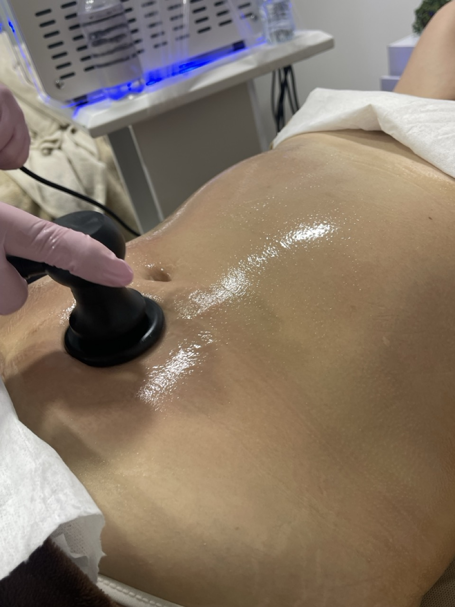
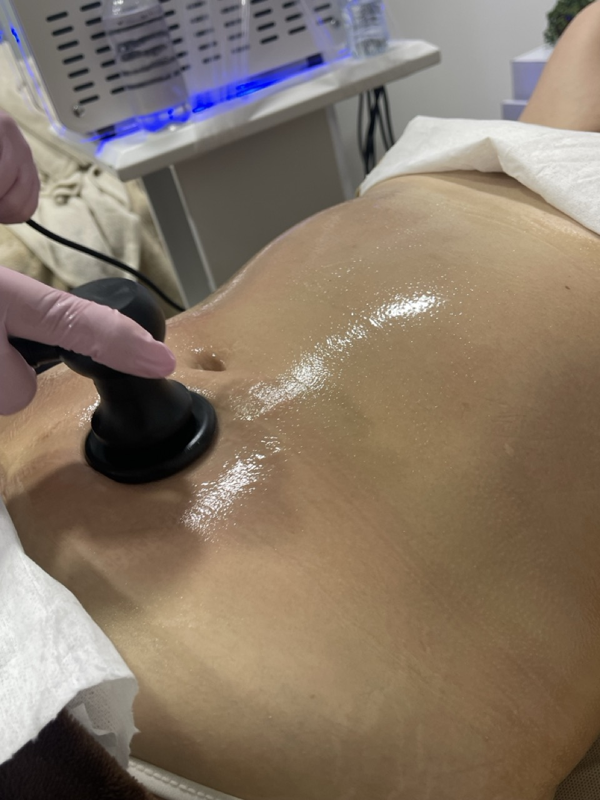

Spa Facial y Estética en Chía
Renueva tu piel y relaja tu cuerpo con nuestros servicios profesionales.
Elige tu Experiencia
Renueva tu piel y relaja tus sentidos. Disfruta de nuestras limpiezas faciales profundas y tratamientos de rejuvenecimiento en un ambiente de total relajación.
Nuestros Trabajos
 


Preguntas Frecuentes
¿Qué marcas de tinte utilizan?
Trabajamos exclusivamente con marcas profesionales de alta gama como Wella, L'Oréal y Schwarzkopf. Esto nos permite garantizar colores vibrantes, duraderos y el máximo cuidado para la salud de tu cabello.
¿Realizan pruebas de alergia?
Sí, tu seguridad es nuestra prioridad. Para clientes nuevos o cambios radicales de color, recomendamos realizar una prueba de alergia con 24-48 horas de antelación para descartar cualquier reacción a los componentes del tinte.
¿Cuánto dura una sesión de Balayage?
El tiempo varía según el largo y volumen de tu cabello, pero generalmente un servicio de Balayage completo toma entre 3 a 5 horas. Nos tomamos el tiempo necesario para lograr un degradado perfecto cuidando la fibra capilar.
¿Tienen tratamientos para cabello dañado?
Absolutamente. Ofrecemos terapias de repolarización, cauterización, keratina y Botox capilar diseñados para restaurar la hidratación, fuerza y brillo del cabello procesado o maltratado.
¿Ofrecen servicios de peluquería y barbería para hombres cerca de mí?
Sí, contamos con una zona exclusiva de barbería en Chía para hombres, ofreciendo cortes modernos y arreglo de barba, muy cerca de ti y de sectores como Fontanar.
¿Realizan maquillaje y uñas en su sede de Chía?
¡Claro que sí! Somos un centro integral. Además de peluquería, ofrecemos maquillaje profesional en Chía y servicios completos de uñas (manicure y pedicure) y spa.
¿Dónde están ubicados? ¿Están cerca de Cajicá?
Estamos ubicados estratégicamente en los bajos del Hotel Ibis, en el Kilómetro 2 vía Chía - Cajicá. Somos tu peluquería ideal si buscas servicio premium en este sector, muy cerca de Fontanar y Centro Chía.